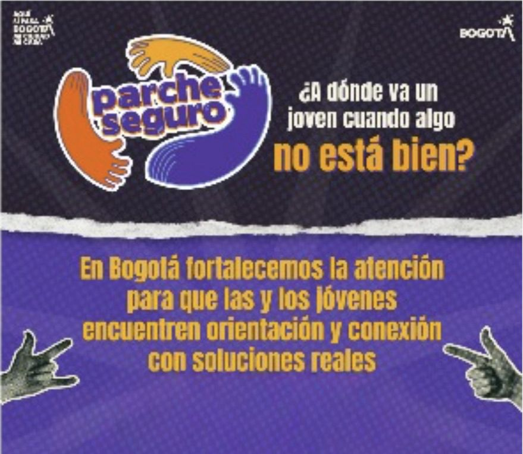

Sistema de identificación y seguimiento de alertas tempranas para la protección integral de la población joven. A partir del triage psicosocial, el equipo identifica situaciones de riesgo y activa los protocolos de atención correspondientes.

Descripción del equipo
El equipo de alertas identifica jóvenes con situaciones de riesgo a partir del triage psicosocial y activa las rutas de atención correspondientes en coordinación con los equipos territoriales y el equipo de analítica de la Subdirección para la Juventud.
Objetivo general
Implementar una estrategia integral de prevención, atención y fortalecimiento de capacidades que permita mejorar las condiciones de vida de los y las jóvenes vinculadas a los servicios de la Subdirección para la Juventud, mediante el establecimiento de rutas de atención a alertas, articulaciones interinstitucionales y acompañamiento técnico a los equipos territoriales.
Objetivos específicos
El Triage psicosocial
El Triage psicosocial es el instrumento principal del equipo de Parche seguro. Es un auto-reporte que se aplica a los jóvenes atendidos por la Subdirección para la Juventud y permite caracterizarlos social, económica y territorialmente. Sus resultados detectan situaciones de riesgo y canalizan a cada joven hacia la atención psicosocial adecuada.
¿Para qué sirve?
Las tres categorías de alertas
Las alertas se clasifican en tres grupos según la urgencia de atención que demandan:
Alertas inmediatas
Situaciones que ponen en riesgo inminente la vida o la integridad del o la joven y requieren atención prioritaria. Los jóvenes son canalizados a las Salas de Escucha Especializadas.
Alertas mediatas
Situaciones que desmejoran la calidad de vida y afectan el bienestar integral, sin implicar riesgo para la vida. Se canalizan a las Salas de Escucha Psicosocial.
Te conectamos
Situaciones que impiden el goce de derechos fundamentales o limitan el acceso a ofertas. Habilitan la vinculación del joven a programas y estrategias de otras entidades distritales.
Protocolos de atención
El equipo de Parche seguro opera a partir de una ruta metodológica que va desde la detección de la alerta hasta el cierre del caso. A continuación se describe la tipología completa de alertas, los instrumentos que usa el equipo, el flujo de atención y los estados de seguimiento.
Diagrama de alertas
Cada alerta tiene un tipo (inmediata, mediata o “te conectamos”) y uno o varios subtipos. La tabla consolida todas las alertas que gestiona el equipo.
| Nombre de la alerta | Tipo | Subtipos |
|---|---|---|
| Amenazas a la vida | Inmediata | No aplica |
| Amenazas a líderes y lideresas | Inmediata | No aplica |
| Violencias | Inmediata | Violencia intrafamiliar · Violencia basada en género / LGBTIQ+ · Bullying |
| Violencia sexual | Inmediata | Acceso carnal violento · Acto sexual violento · Acceso carnal o acto sexual en persona puesta en incapacidad de resistir · Acceso carnal abusivo con menor de 14 años · Actos sexuales con menor de 14 años · Acceso carnal o acto sexual abusivos con incapaz de resistir · Acoso sexual · Inducción a la prostitución · Proxenetismo con menor de edad · Constreñimiento a la prostitución · Estímulo a la prostitución de menores · Pornografía con menores de 18 años · Turismo sexual · Omisión de denuncia |
| Riesgo de habitabilidad en calle | Inmediata | No aplica |
| Situaciones críticas de salud | Inmediata | Enfermedades crónicas y situaciones de salud sin atención · Emergencias de salud en el marco de las actividades condicionadas |
| Conducta suicida | Inmediata | Ideación · Amenaza · Intento |
| Salud mental | Mediata | Riesgos psicosociales con barreras de acceso a salud · Trastornos mentales diagnosticados con barreras de acceso a salud |
| Consumo de SPA | Mediata | Consumo problemático de sustancias psicoactivas |
| Personas sin aseguramiento en salud | Mediata | No aplica |
| Cuidadoras | Te conectamos | Jóvenes con alta carga de cuidado |
| Gestantes y lactantes | Te conectamos | Mujeres en estado de embarazo · Lactantes hasta los 2 años del niño o niña |
| Menores de 5 años sin educación inicial | Te conectamos | Niños o niñas de 0 a 5 años |
| Orientación jurídica | Te conectamos | Definición de situación militar · Comparendos · Alimentos, visitas y custodia · Otros |
Instrumentos del equipo
El equipo captura y hace seguimiento de las alertas con dos instrumentos articulados:
Formulario de alertas
Formulario de Outlook que diligencia el profesional psicosocial cuando identifica una alerta. Tiene preguntas ramificadas adaptadas a cada tipo de alerta, de modo que al momento del enrutamiento ya contiene toda la información que requiere la entidad receptora. Es de uso exclusivo de los equipos psicosocial y de alertas.
Base de datos de alertas
Archivo de Excel centralizado que descarga y organiza el equipo de analítica semanalmente. Permite filtrar por tipología, revisar el estado y los seguimientos de cada caso, e identificar los casos más complejos para ajustar rutas de enrutamiento.
Ruta de atención en 4 pasos
El flujo de atención de cada alerta pasa por cuatro momentos:
Estados de seguimiento
Cada alerta puede terminar en uno de los siguientes estados, según su evolución:
| Estado | Definición |
|---|---|
| Atendido por servicio | El caso fue atendido por la entidad competente de la Secretaría Distrital de Integración Social. |
| En lista de espera | Cumplió con todo el proceso dentro de la entidad competente y se encuentra en espera de atención. |
| No cumple con requisitos | No cumple con los requisitos para el ingreso al servicio de la entidad competente. |
| No requiere atención | Al verificar la situación el o la joven reporta que ya se solucionó y no desea reportar a ninguna entidad. |
| No se puede contactar | Se intentó contactar 3 veces al joven y no fue posible establecer ningún tipo de contacto. |
| Ya estaba en el servicio | Ya se había reportado la situación con anterioridad a la entidad competente. |
| No desea la atención | No desea acceder al servicio o proceso para atender la situación reportada. |
| Cierre del caso | Finalización del seguimiento de la situación reportada. |